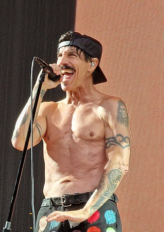
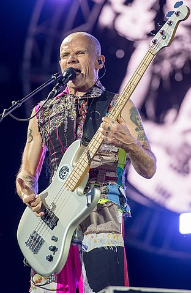
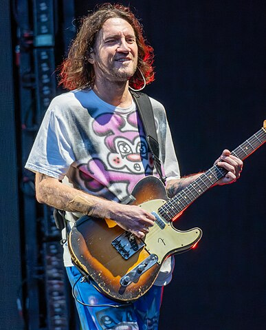

About Red Hot Chili Peppers
Red Hot Chili Peppers
The Red Hot Chili Peppers are an American rock band formed in Los Angeles in 1982, comprising vocalist Anthony Kiedis, bassist Flea, drummer Chad Smith, and guitarist John Frusciante. Their music incorporates elements of alternative rock, funk, punk rock, hard rock, hip hop, and psychedelic rock. Their eclectic range has influenced genres such as funk metal, rap metal, rap rock, and nu metal. With over 120 million records sold worldwide, the Red Hot Chili Peppers are one of the top-selling bands of all time. They hold the records for most number-one singles (15), most cumulative weeks at number one and most top-ten songs (28) on the Billboard Alternative Songs chart. They have won three Grammy Awards, were inducted into the Rock and Roll Hall of Fame in 2012, and in 2022 received a star on the Hollywood Walk of Fame.
The Red Hot Chili Peppers were formed in Los Angeles by Kiedis, Flea, guitarist Hillel Slovak and drummer Jack Irons. Due to commitments to other bands, Slovak and Irons did not play on the band's 1984 self-titled debut album, which instead featured guitarist Jack Sherman and drummer Cliff Martinez. Slovak rejoined for their second album, Freaky Styley (1985), and Irons for their third, The Uplift Mofo Party Plan (1987). Irons left after Slovak died of a drug overdose in June 1988.
Current Band Members:
Anthony Kiedis |
Flea (Michael Balzary) |
John Frusciante |
Chad Smith |
|
lead vocals (1982–present) |
bass, backing vocals (1982–present), trumpet (1988–present), keyboards (1991, 2011–present) |
guitars, backing vocals (1988–1992, 1998–2009, 2019–present), keyboards (1998–2009, 2019–present) |
drums, percussion (1988–present) |
|  |  |  |  |
Former members:
- Hillel Slovak – guitars, backing vocals (1982–1983, 1985–1988; his death)
- Jack Irons – drums, backing vocals (1982–1983, 1986–1988)
- Cliff Martinez – drums (1983–1986)
- Jack Sherman – guitars, backing vocals (1983–1984; died 2020)
- DeWayne McKnight – guitars, backing vocals (1988)
- D. H. Peligro (Darren Henley) – drums (1988; died 2022)
- Arik Marshall – guitars, backing vocals (1992–1993)
- Jesse Tobias – guitars, backing vocals (1993)
- Dave Navarro – guitars, backing vocals (1993–1998)
- Josh Klinghoffer – guitars, keyboards, backing vocals (2009–2019; touring 2007)
Awards and recognition
The Red Hot Chili Peppers were inducted into the Rock and Roll Hall of Fame in April 2012. The induction lineup was Kiedis, Flea, Smith, Klinghoffer, Frusciante, Slovak (represented by his brother James), Irons and Martinez; Frusciante was invited, but did not attend. Navarro and Sherman were not inducted; Sherman said he felt "dishonored". The band performed "By the Way", "Give It Away" and "Higher Ground", which included Irons and Martinez on drums. It was the first time Kiedis and Flea had performed with Irons in more than 20 years.
Legacy and influence
The Red Hot Chili Peppers' mix of hard rock, funk and hip hop has influenced genres such as funk metal, rap metal, rap rock and nu metal. AllMusic claim that in 1992, "oodles of (mostly horribly bad) funk-metal acts were following in Faith No More and the Red Hot Chili Peppers' footsteps." Bands who have cited the Red Hot Chili Peppers as an influence include Incubus, Mr. Bungle, Primus, Rage Against the Machine, System of a Down, Papa Roach, 311, and Sugar Ray. The members of Korn, who were formerly in the funk metal band L.A.P.D., have also cited them as an influence. Kiedis said the band were early to combine "hardcore funk and hip-hop-style vocals", and suggested they had influenced Limp Bizkit, Kid Rock, and Linkin Park. Smith said, "Certainly Anthony's singing style and voice lends itself to being unique, and nobody sounds like him. The cool thing about it is we can play any style of music whether it's hard and fast, or loud or quiet, slow or medium, whatever it is, rock or funk, and it still sounds like us. I'm proud of that because sometimes bands don't have that strong personality where you go, 'Oh, that's boom, right away.'"
Intresting Facts about RHCP:
Haunted by success
The album that changed the image for the band, Blood Sugar Sex Magik, was recorded in 1991 in a mansion rumored to be haunted. The mansion was previously owned by the magician Harry Houdini, and was later purchased by music producer Rick Rubin who turned it into a home recording studio.
Who is the clown who changed the words
Musicians take seriously the words they write, some will say that their creation is like their "baby". However, when the Peppers played the special episode of The Simpsons for the return of Krusty the Clown, they made a slight and non-trivial change as stated in the lyrics. The changed line is from the popular song Give it Away. Instead of: What I got you got to get and put it in you, the band sang: What I'd like is I'd like to hug and kiss you?. The small change made the song suitable for listening to the whole family.
Israeli band member
Hillel Slovak (April 13, 1962 – June 25, 1988) was an Israeli-American musician, best known as the founding guitarist of the Los Angeles rock band Red Hot Chili Peppers, with whom he recorded two albums.Born in Israel, he later moved to the United States. Slovak met future bandmates Anthony Kiedis, Flea, and Jack Irons while attending Fairfax High School in Los Angeles.
The album that killed Slovak
The third album and the first to appear in the charts was The Uplift Mofo Party Plan released in 1987. For the production of the album the band received a budget of 5,000 dollars, with rumors saying that part of it was dedicated to the purchase of narcotics. Anthony and Slovac both suffered from drug addiction during these years, which finally cost Slovac his life in 1988. In 1992 after getting clean, Kiedis participated in an anti-drug video called "Trip on This" along with other well-known artists of the time such as the Beastie Boys.